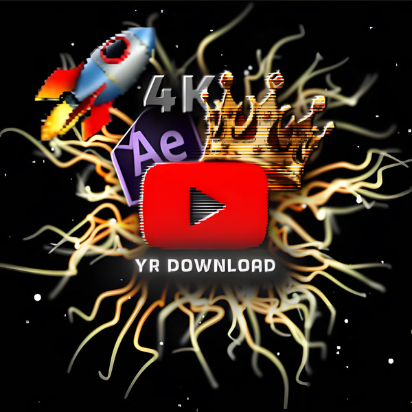

Make it 4K. Make it clean.
Upscale images to 4K with AI and erase text or watermarks – free, right here in your browser. Your files never leave your device.
Exports a 4K H.264 MP4 with audio that opens in CapCut, Premiere, After Effects and DaVinci. Runs in your browser – Chrome or Edge on a computer works best. For long videos or video links, use the PC app.
Drag over the text to mark it · click a red box to remove it
The first time, the AI model (~200 MB) downloads once and is then remembered by your browser.
If the video already exists in 4K, it's downloaded in 4K directly and converted to an editing format – no quality loss.
Checking for the 4K Studio app…
One-time setup: install the free 4K Studio app
Link downloads run through a small app on your computer – that's what makes them fast, full quality and never blocked. Install it once, start it, and this page will use it automatically.
Extract the ZIP → double-click install.bat (once) → double-click start.bat. If Chrome asks to allow access to devices on your network, click Allow.